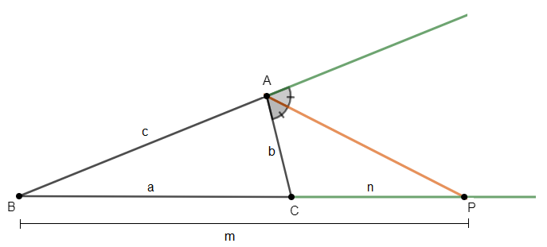

Triângulos
⨕ Introdução :
▴ Congruência : Um triângulo é congruente a outro se há uma correspondência entre seus lados e ângulos de forma ordenada.
▴ Segmentos Proporcionais :
Casos de Congruência :
Demonstra qual a semelhança de dois ou mais triângulos
• LAL : Lado Ângulo Lado
• LLL : Lado Lado Lado
• LAA : Lado Ângulo Ângulo
• Especial : Um cateto e a hipotenusa congruente no triângulo retângulo

Teoremas :
• Tales : Se duas retas são transversais, com dois feixes de retas paralelas, então a razão entre dois segmentos quaisquer é igual a razão dos respectivos feixes
AB / BC = A´B´ / B´C´
• bissetriz interna : Divide o lado oposto em segmentos proporcionais aos adjacentes
X / C = Y / B
• bissetriz externa : Se a bissetriz do ângulo externo de um triangulo intercepta a reta que contém o lado oposto, então a divide em segmentos proporcionais aos adjacentes
X / Cc = Y / Bb
• fundamental : Se uma reta é paralela a um dos lados de um triângulo, e uma faixa a corta no meio em lugares distintos, então a primeira é semelhante a primeira
△ABC ~ △ AED
▴ Semelhança de triângulos : Dois triângulos são semelhantes se os três ângulos são ordenadamente iguais e se os lados são proporcionais.
▴ Pontos Notáveis :
• Barricentro : É o ponto de encontro quando traçamos as três medianas no triângulo, é o G do triângulo
• incentro : Em um triângulo, É o ponto em que as suas três bissetrizes se cruzam, e fica à mesma distância de todos os seus lados.
• Circuncentro : É o ponto de encontro (interseção) entre as três mediatrizes. Uma mediatriz é uma reta que corta um segmento no seu ponto médio, com um ângulo de 90°.
• Ortocentro : É o ponto de encontro (interseção) entre as três mediatrizes. Uma mediatriz é uma reta que corta um segmento no seu ponto médio, com um ângulo de 90°.
• Caso especial : Em um triângulo equilátero todos os pontos notáveis coicidem
• Triângulos :
Casos de Semelhança de triângulos :
• AA : Dois ângulos congruentes
• LAL : dois lados congruentes e ângulos iguais
• LLL : Tem lados proporcionais
⨕ Video :